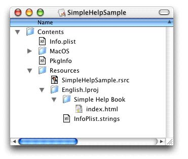

Q:
We ship a help book inside of our application's bundle.
Where should I install my help book, and how does Help Viewer locate it?
And, what keys should we include in our Info.plist file so the
book will be recognized by the Help Viewer?
A:
For the help viewer to find your application's help content,
you application should provide the CFBundleIdentifier,
CFBundleHelpBookFolder, and the CFBundleHelpBookName
plist tags. These tags are defined as follows:
CFBundleIdentifier - identifies your bundle to the system.
CFBundleHelpBookFolder - the name of your help book's folder.
CFBundleHelpBookName - identifies the name of the page in
your help book that should be displayed when your application's
help is chosen from the help menu. For example, the HTML
shown in listing 1 defines a page named "Simple Help".
<HTML>
<HEAD>
<META HTTP-EQUIV="content-type" CONTENT="text/html;charset=iso-8859-1">
<TITLE>Simple Help Page</TITLE>
<META NAME="AppleTitle" CONTENT="Simple Help">
</HEAD>
<BODY BGCOLOR="#ffffff">
<P>Simple Help!</P>
</BODY>
</HTML>
|
|
Listing 1. HTML contents of the main entry page in a Help Book entitled "Simple Help".
|
Normally, an application will provide a separate help book for each
language localization it provides inside of its application bundle. Figure 1
illustrates the appropriate location for an English version of a help book
inside of an application's bundle.

Figure 1.Location of a help book named "Simple Help Book"
in a Mac OS X application Bundle.
|
The bundle shown in Figure 1 together with the HTML shown in listing 1
can be used to illustrate appropriate usage of the CFBundleHelpBookFolder
and the CFBundleHelpBookName plist tags. Say, for example, the HTML
shown in Figure 1 is the contents of the file index.html shown in
Figure 1. Then,
the Help Book name (CFBundleHelpBookName) is "Simple Help", and the
Help Book folder name (CFBundleHelpBookFolder) is "Simple Help Book".
|
Note:
For Mac OS X version 10.0, CFBundleHelpBookName is localizable,
whereas CFBundleHelpBookFolder is not.
|
The Help Viewer application will use the
CFBundleHelpBookFolder and the CFBundleHelpBookName
plist tags to locate your application's help content. For Cocoa applications,
help content is located automatically, but Carbon applications must explicitly
register their application bundle's help book when they start up. This is done
using the AHRegisterHelpBook routine as shown in Listing 2.
/* RegisterMyHelpBook registers an application's help
book. It can be called as part of the application's
initialization sequence. Once it has been called, the
application is free to use any of the other Apple Help
routines to access and display the contents of their
help book.
This routine illustrates how one would use the
AHRegisterHelpBook routine in their application. */
OSStatus RegisterMyHelpBook(void) {
CFBundleRef myAppsBundle;
CFURLRef myBundleURL;
FSRef myBundleRef;
OSStatus err;
/* set up a known state */
myAppsBundle = NULL;
myBundleURL = NULL;
/* Get our application's main bundle
from Core Foundation */
myAppsBundle = CFBundleGetMainBundle();
if (myAppsBundle == NULL) { err = fnfErr; goto bail;}
/* retrieve the URL to our bundle */
myBundleURL = CFBundleCopyBundleURL(myAppsBundle);
if (myBundleURL == nil) { err = fnfErr; goto bail;}
/* convert the URL to a FSRef */
if ( ! CFURLGetFSRef(myBundleURL, &myBundleRef) ) {
err = fnfErr;
goto bail;
}
/* register our application's help book */
err = AHRegisterHelpBook(&myBundleRef);
if (err != noErr) goto bail;
/* done */
CFRelease(myBundleURL);
return noErr;
bail:
if (myBundleURL != NULL) CFRelease(myBundleURL);
return err;
}
|
|
Listing 2. How your application registers its help book when it starts up.
|
References
The Apple Help SDK provides
samples and documentaiton explaining appropriate layout of help books.
The Apple Help Documentation provides
documentation about Help Books, calls for displaying specific help content, and tips for help
content writers.
[Apr 09 2001]
|